Drei statt zwei.
Bislang hast du Viertelschläge in zwei Achtel oder vier Sechzehntel geteilt. Jetzt teilst du denselben Schlag in drei gleich lange Teile. Der Viertelpuls bleibt unverändert. Diese Einheit behandelt Achteltriolen im 4/4-Takt.
Du solltest Viertel und Achtel sicher zählen und den Puls mit dem Fuß halten können. Die Grundlagen aus Rhythmus Kurs 1 helfen dir beim Auffrischen.
Drei Achteltriolen dauern einen Viertelschlag.
Eine Achteltriole besteht aus drei triolischen Achteln in der Zeit von zwei normalen Achteln. Die ganze Gruppe dauert also einen Viertelschlag. Jeder ihrer drei Töne dauert ⅓ Schlag.
| Unterteilung | Töne pro Schlag | Dauer je Ton |
|---|---|---|
| Gerade Achtel | 2 | ½ Schlag |
| Achteltriolen | 3 | ⅓ Schlag |
| Sechzehntel | 4 | ¼ Schlag |
In einen 4/4-Takt passen vier vollständige Achteltriolen-Gruppen, also zwölf triolische Achtel. Es gibt auch Triolen mit anderen Notenwerten; hier bleiben wir bei Achteltriolen.
Eine Triole verändert die Unterteilung, nicht die Taktart. Unser 4/4-Takt hat weiterhin vier Viertelschläge.
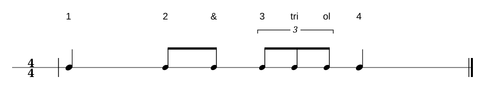
Die kleine 3 macht den Unterschied.
Die Töne werden als Achtelnoten geschrieben: mit ausgefülltem Kopf, Hals und einem Fähnchen beziehungsweise einem gemeinsamen Balken. Die kleine Ziffer 3 kennzeichnet die Triolengruppe. Eine Klammer kann zusätzlich zeigen, welche Noten zur Gruppe gehören.
Der Balken allein macht aus Achteln keine Triole. Entscheidend ist hier die Triolenkennzeichnung. Drei normale Achtel dauern zusammen anderthalb Viertelschläge; drei triolische Achtel dauern zusammen nur einen.
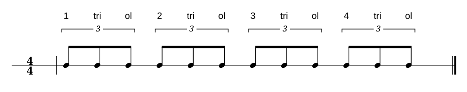
Drei Positionen pro Schlag.
Wir zählen in dieser Einheit „1 tri ol, 2 tri ol, 3 tri ol, 4 tri ol“. Zahl, „tri“ und „ol“ liegen gleich weit auseinander. Sprich auch von „ol“ zur nächsten Zahl mit genau demselben Abstand weiter.
Position 1 liegt auf der Hauptzählzeit. Position 2 folgt nach einem Drittel des Schlags, Position 3 nach zwei Dritteln.
Das „&“ der geraden Achtel liegt in der Mitte des Schlags. Keine der beiden inneren Triolenpositionen liegt genau dort. Anders als beim Sechzehntelraster kannst du die bekannte &-Zählzeit hier nicht einfach übernehmen.
Beginne mit 40 BPM. Der Metronomklick und dein Fuß markieren die Viertel; die Stimme spricht drei Silben pro Klickabstand.
Stille innerhalb der Triole.
Ein Ton der Achteltriole kann durch eine Achtelpause innerhalb der Triolenkennzeichnung ersetzt werden. Diese Pause dauert dann ⅓ Viertelschlag. Es gibt dafür kein eigenes neues Pausensymbol.
Die Pause bleibt Teil der Dreiergruppe. Zwei triolische Achtelnoten und eine entsprechende Pause füllen gemeinsam einen Viertelschlag. Der Fuß und das innere Zählen laufen während der Stille weiter.
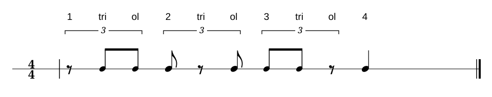
Erst orientieren, dann verbinden.
Kapitel 1: Die drei Positionen verstehen, die zweite und dritte Position gezielt wahrnehmen und erst am Schluss Triolen mit anderen Unterteilungen verbinden.
Kapitel 2: Pausen auf der ersten, zweiten und dritten Triolenposition zunächst getrennt üben; danach mischen.
- Erklärung
- Körperübung
- Mitspiel-MP3
- Leseübung
- Höraufgabe
Aufnahmen, Notenbilder und Lösungen werden später ergänzt. Die beschrifteten Platzhalter zeigen, welche Aufgaben an dieser Stelle folgen.
Kapitel 01 · Direkt im Kurs
Die Achteltriolen.
Drei Positionen kennenlernen, sicher zählen und am Ende verbinden.
Der Viertelpuls bleibt.
Lerne zuerst das Dreier-Raster kennen. Danach richtest du deine Aufmerksamkeit einzeln auf die zweite und dritte Position. Erst die letzte Lektion mischt Positionen und Unterteilungen.
Wir arbeiten mit Achteltriolen im 4/4-Takt. Beginne mit 40 BPM. Jeder Metronomklick entspricht einem Viertelschlag.
- Erklärung
- Körperübung
- Mitspiel-MP3
- Leseübung
- Höraufgabe
Kursentwurf: Aufgaben, Aufnahmen und Lösungen folgen.
1. Die drei Positionen
1. Erklärung
Die Hauptzählzeit ist die erste Triolenposition. „tri“ markiert die zweite, „ol“ die dritte. Alle drei teilen einen Viertelschlag gleichmäßig. Die zweite Position liegt vor der geraden &-Zählzeit, die dritte danach.
2. Körperübung
Zähle „1 tri ol“ und dann entsprechend die Schläge 2 bis 4. Klatsche alle drei Positionen und betone zunächst nur die Zahl leicht. Der Fuß bleibt auf den vier Hauptzählzeiten.
Beginne mit 40 BPM. Zähle auch zwischen den hörbaren Einsätzen gleichmäßig weiter.
Schwerpunkt: Vollständige Triolengruppen; Hauptzählzeit und drei gleichmäßige Positionen erkennen.
3. Mitspielübung
4. Leseübung
Beginne mit 40 BPM. Halte den Viertelpuls mit dem Fuß. Zähle bei Triolen „Zahl tri ol“, bei geraden Achteln „Zahl und“. Alle Teile der jeweiligen Unterteilung bleiben gleichmäßig.
Das Zeichen > über einer Note ist ein Akzent: Spiele diesen Ton etwas kräftiger, ohne ihn zu verlängern. Auch die unbetonten Noten werden gespielt.
In dieser Lektion liegt der Akzent auf Triolenposition 1. Die Gruppen bleiben vollständig.
Leseübung 1 · Schlag 1
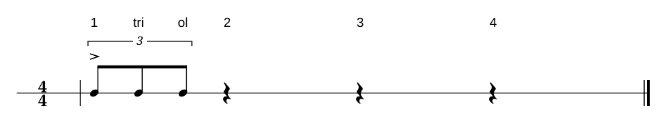
Kontrollaufnahme zu Leseübung 1
Leseübung 2 · Schlag 2
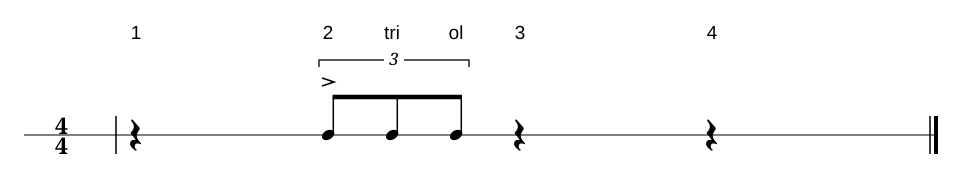
Kontrollaufnahme zu Leseübung 2
Leseübung 3 · Schlag 3
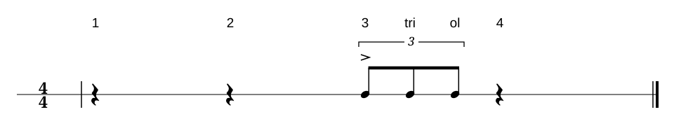
Kontrollaufnahme zu Leseübung 3
Leseübung 4 · Schlag 4
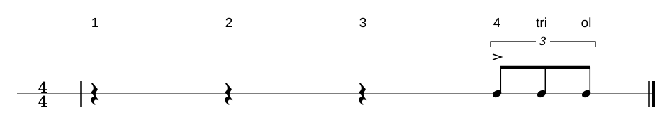
Kontrollaufnahme zu Leseübung 4
Leseübung 5 · Alle vier Schläge

Kontrollaufnahme zu Leseübung 5
Leseübung 6 · Schläge 1 und 3
Kontrollaufnahme zu Leseübung 6
5. Höraufgaben
Halte den Fußpuls, höre zu und notiere den Rhythmus sowie die gehörten Akzente. Vergleiche danach mit der Lösung.
Weiter ↓2. Die zweite Position · „tri“
1. Erklärung
Die zweite Position liegt ein Drittel des Viertelschlags nach der Zahl. Sie liegt weder auf dem „e“ des Sechzehntelrasters noch auf dem „&“ der geraden Achtel. Wir bleiben zunächst bei vollständigen Triolengruppen und lenken die Aufmerksamkeit auf den mittleren Ton.
2. Körperübung
Klatsche weiterhin alle drei Töne gleichmäßig. Betone „tri“ etwas stärker, ohne es zu verlängern. Der Fuß trifft weiter die Zahl. Die Betonung verändert die Lautstärke, nicht die Dauer.
Beginne mit 40 BPM. Zähle auch zwischen den hörbaren Einsätzen gleichmäßig weiter.
Schwerpunkt: Vollständige Triolen mit Aufmerksamkeit und Akzent auf Position 2; noch keine gemischten Unterteilungen.
3. Mitspielübung
4. Leseübung
Beginne mit 40 BPM. Halte den Viertelpuls mit dem Fuß. Zähle bei Triolen „Zahl tri ol“, bei geraden Achteln „Zahl und“. Alle Teile der jeweiligen Unterteilung bleiben gleichmäßig.
Das Zeichen > über einer Note ist ein Akzent: Spiele diesen Ton etwas kräftiger, ohne ihn zu verlängern. Auch die unbetonten Noten werden gespielt.
In dieser Lektion liegt der Akzent auf Triolenposition 2. Die Gruppen bleiben vollständig.
Leseübung 1 · Schlag 1
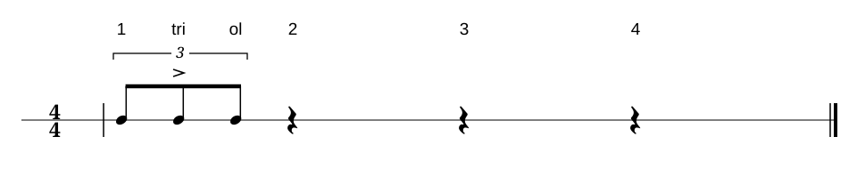
Kontrollaufnahme zu Leseübung 1
Leseübung 2 · Schlag 2
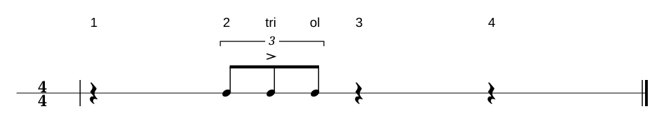
Kontrollaufnahme zu Leseübung 2
Leseübung 3 · Schlag 3
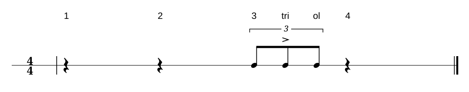
Kontrollaufnahme zu Leseübung 3
Leseübung 4 · Schlag 4
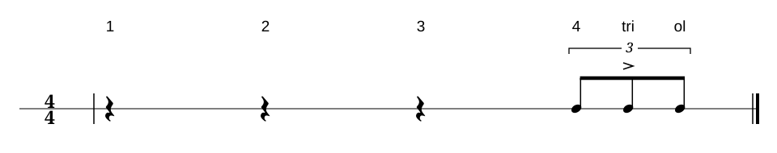
Kontrollaufnahme zu Leseübung 4
Leseübung 5 · Alle vier Schläge

Kontrollaufnahme zu Leseübung 5
Leseübung 6 · Schläge 1 und 3
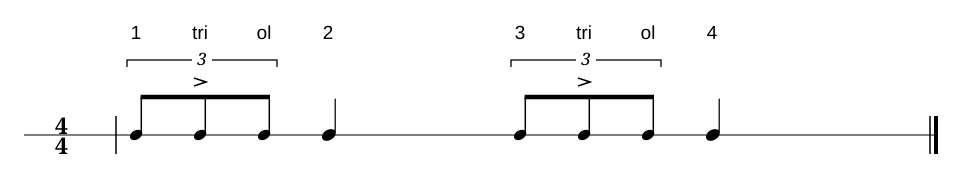
Kontrollaufnahme zu Leseübung 6
5. Höraufgaben
Halte den Fußpuls, höre zu und notiere den Rhythmus sowie die gehörten Akzente. Vergleiche danach mit der Lösung.
Weiter ↓3. Die dritte Position · „ol“
1. Erklärung
Die dritte Position liegt zwei Drittel des Viertelschlags nach der Zahl. Von dort bis zur nächsten Zahl bleibt genau ein weiteres Drittel. Der letzte Ton darf deshalb nicht an die nächste Hauptzählzeit gedrängt werden.
2. Körperübung
Klatsche alle drei Töne und betone diesmal „ol“ leicht. Halte von „ol“ zur nächsten Zahl denselben Abstand wie von der Zahl zu „tri“. Der Fuß läuft unabhängig davon weiter.
Beginne mit 40 BPM. Zähle auch zwischen den hörbaren Einsätzen gleichmäßig weiter.
Schwerpunkt: Vollständige Triolen mit Aufmerksamkeit und Akzent auf Position 3; noch keine gemischten Unterteilungen.
3. Mitspielübung
4. Leseübung
Beginne mit 40 BPM. Halte den Viertelpuls mit dem Fuß. Zähle bei Triolen „Zahl tri ol“, bei geraden Achteln „Zahl und“. Alle Teile der jeweiligen Unterteilung bleiben gleichmäßig.
Das Zeichen > über einer Note ist ein Akzent: Spiele diesen Ton etwas kräftiger, ohne ihn zu verlängern. Auch die unbetonten Noten werden gespielt.
In dieser Lektion liegt der Akzent auf Triolenposition 3. Die Gruppen bleiben vollständig.
Leseübung 1 · Schlag 1
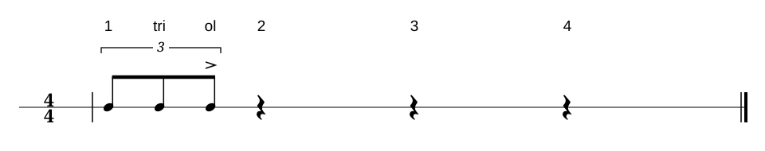
Kontrollaufnahme zu Leseübung 1
Leseübung 2 · Schlag 2
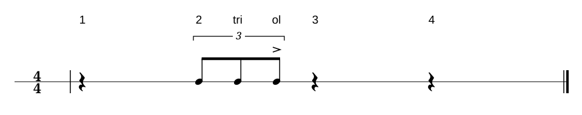
Kontrollaufnahme zu Leseübung 2
Leseübung 3 · Schlag 3
Kontrollaufnahme zu Leseübung 3
Leseübung 4 · Schlag 4
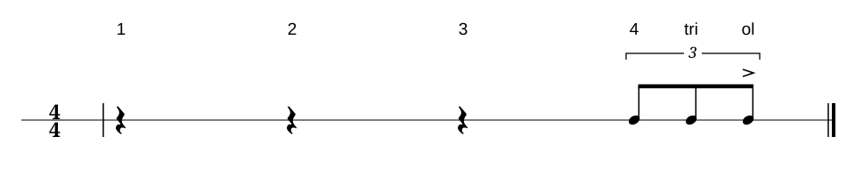
Kontrollaufnahme zu Leseübung 4
Leseübung 5 · Alle vier Schläge

Kontrollaufnahme zu Leseübung 5
Leseübung 6 · Schläge 1 und 3
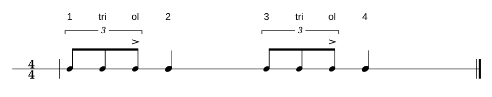
Kontrollaufnahme zu Leseübung 6
5. Höraufgaben
Halte den Fußpuls, höre zu und notiere den Rhythmus sowie die gehörten Akzente. Vergleiche danach mit der Lösung.
Weiter ↓4. Positionen und Unterteilungen mischen
1. Erklärung
Jetzt wechselst du zwischen den drei Akzentpositionen. Anschließend verbindest du Triolen mit Vierteln und geraden Achteln. Ein Viertelschlag bleibt gleich lang, unabhängig davon, ob du einen, zwei oder drei Töne darin spielst.
2. Körperübung
Wechsle zuerst taktweise: ein Takt gerade Achtel, ein Takt Achteltriolen. Zähle bei Achteln „1 und“, bei Triolen „1 tri ol“. Erst wenn das stabil gelingt, wechsle innerhalb eines Taktes.
Beginne mit 40 BPM. Zähle auch zwischen den hörbaren Einsätzen gleichmäßig weiter.
Schwerpunkt: Akzentpositionen mischen; dann Viertel, gerade Achtel und Achteltriolen verbinden.
3. Mitspielübung
4. Leseübung
Beginne mit 40 BPM. Halte den Viertelpuls mit dem Fuß. Zähle bei Triolen „Zahl tri ol“, bei geraden Achteln „Zahl und“. Alle Teile der jeweiligen Unterteilung bleiben gleichmäßig.
Das Zeichen > über einer Note ist ein Akzent: Spiele diesen Ton etwas kräftiger, ohne ihn zu verlängern. Auch die unbetonten Noten werden gespielt.
Die gemischten Leseübungen enthalten jeweils vier Takte.
Leseübung 1 · Gemischte Rhythmen

Kontrollaufnahme zu Leseübung 1
Leseübung 2 · Gemischte Rhythmen

Kontrollaufnahme zu Leseübung 2
Leseübung 3 · Gemischte Rhythmen

Kontrollaufnahme zu Leseübung 3
5. Höraufgaben
Halte den Fußpuls, höre zu und notiere den Rhythmus sowie die gehörten Akzente. Vergleiche danach mit der Lösung.
Weiter ↓Wissen anwenden.
Aufgabe 1 · Takte vervollständigen
Ergänze die gestrichelten Lücken mit Noten oder Pausen, bis jeder 4/4-Takt vier Viertelschläge enthält. Das Fragezeichen ist kein Pausenzeichen. Mehrere Ergänzungen können richtig sein. Ergänze die Takte direkt über die Fragezeichenfelder. Triolen werden mit der Ziffer 3 gekennzeichnet.
Verwende keine punktierten Werte. Pausen innerhalb der Triole kommen erst im nächsten Kapitel; verwende hier vollständige Triolengruppen.
Ergänzungsaufgabe 1

Ergänzungsaufgabe 2

Ergänzungsaufgabe 3

Aufgabe 2 · Fehler hören und finden
Jede Aufnahme enthält einen Takt mit einer Abweichung. Vergleiche ihn mit der korrekten Notation. Beschreibe den Unterschied und spiele den Takt richtig.
Aufgabe 2.1 · Fehler hören und finden
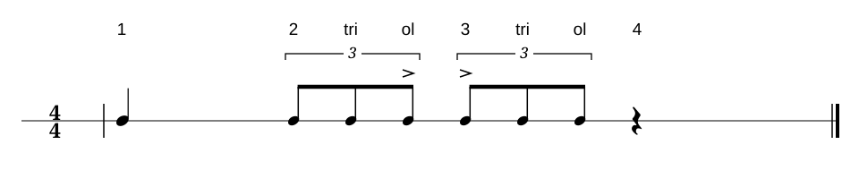
Lösungshilfe
Die Achtel-Triolen-Gruppe auf dem dritten Schlag wird in der Aufnahme anders betont als in der Notation. Es wird die letzte Triole, also 3 tri ol, betont, aber die Notation schreibt, dass die erste Triole des dritten Schlages betont sein soll. Daher 3 tri ol.
Aufgabe 2.2 · Fehler hören und finden
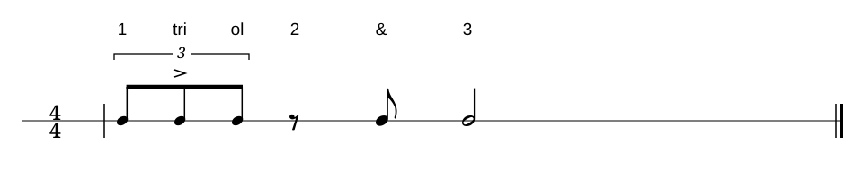
Lösungshilfe
Auf Schlag 3 ist eine halbe Note notiert. In der Aufnahme wird aber eine Viertelnote auf Schlag 3 und eine Viertelnote auf Schlag 4 gespielt.
Aufgabe 2.3 · Fehler hören und finden
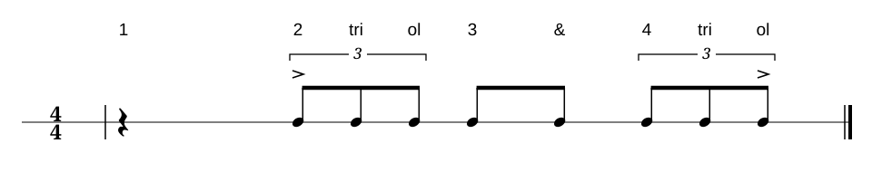
Lösungshilfe
In der Notation soll die Triolengruppe auf Schlag 2 auf der Zahl 2 betont sein und die Gruppe auf Schlag 4 auf dem „ol“. In der Aufnahme werden aber beide Gruppen mit einer Betonung auf dem „tri“ gespielt.
Aufgabe 3 · Einen eigenen Rhythmus schreiben
Schreibe vier eigene 4/4-Takte auf Papier. Verwende keine punktierten Werte.
Setze in die ersten drei Takte jeweils mindestens eine vollständige Achteltriole. Markiere dabei in Takt 1 die erste, in Takt 2 die zweite und in Takt 3 die dritte Triolenposition mit einem Akzent. Mische im vierten Takt Triolen mit geraden Achteln und Vierteln. Verwende noch keine Pausen innerhalb einer Triole.
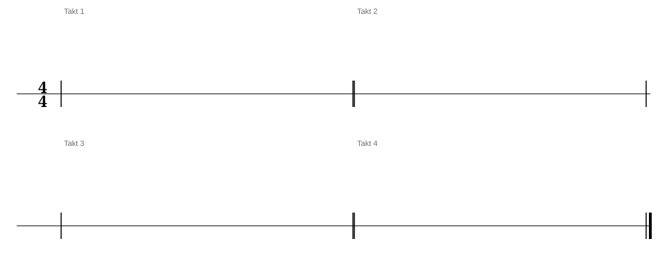